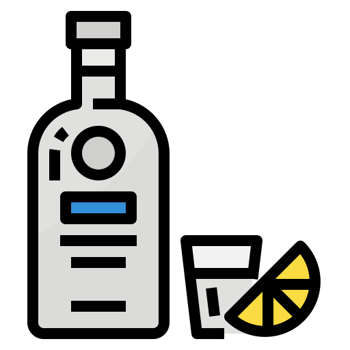

HTML과 CSS를 활용한 주류 소개 사이트
MY TEAM-PROJECT
팀명: 힘쓰게 하지마
팀원: 유태균 심정보 성우상 이승훈 이규민
사이트 로딩중

소주
소주는 한국의 술이자
증류주의 한 종류입니다.
증류식 소주와 물과 기타
첨가물을 희석해 만든
희석식 소주가 존재합니다.
맥주
보리를 가공한 맥아를
주재료로 발효시키고
향신료인 홉을 첨가한
술입니다.가장 대중화된
주류라고 할 수 있다.

보드카
무색, 무미, 무향이 특징인
대표적인 증류주입니다.
재료는 일반적으로 곡물, 감자, 사탕무, 당밀이 있습니다.
맛과 향이 좋습니다.

와인
포도의 즙을 발효시켜서 만든
알코올성의 양조주중
과실주입니다.와인의 알코올 도수는 보통 13-15% 입니다.

막걸리
쌀로 밑술을 담가 청주를 걸러
내고 남은 술지게미를 다시
체에 물로 걸러낸 술로 양조주에 속합니다
음주 규칙
1. 자신의 주량 지키지
2.빈속에 마시지않기
3.천천히 마시기